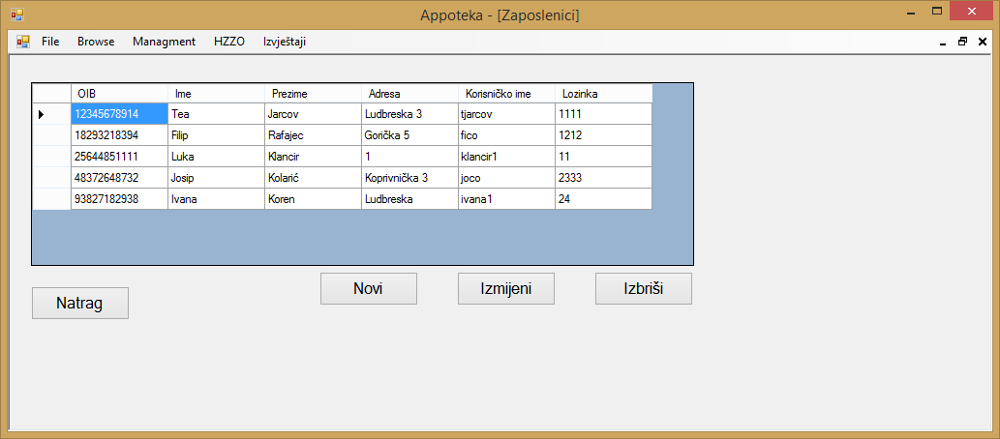
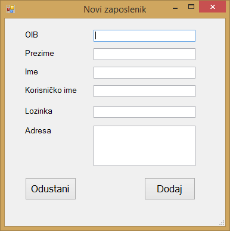
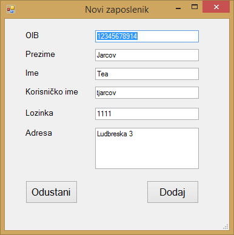

Klikom na gumb "Managment" u glavnom meniju otvara se izbor od četiri stavke, to su "Zaposlenici", "Dobavljači", "Kategorije lijekova" i "Ladice". Klikom na gumb "Zaposlenici" otvara se prozor u kojemu se nalazi popis svih zaposlenika koji su trenutno uneseni u aplikaciju te su prikazani svi relevantni podaci o tim istim zaposlenicima.

Ako korisnik aplikacije želi dodati novog zaposlenika, to može učiniti klikom na gumb "Novi", pri čemu se otvara novi prozor u kojemu se unose podaci o novom zaposleniku.

Nakon što su uneseni svi podaci o novom zaposleniku, klikom na gumb "Dodaj" dodaje se novi zaposlenik u aplikaciju te aplikacija javlja korisniku da je novi zaposlenik uspješno dodan. Klikom na gumb "Odustani" postupak dodavanja novog zaposlenika se poništava.
Ako korisnik aplikacije želi izmijeniti podatke o određenom zaposleniku, to može učiniti na način da odabere željenog zaposlenika i klikne na gumb "Izmjeni" nakon čega se otvara novi prozor u kojemu se nalaze svi podaci o odabranom zaposleniku.

Klikom na gumb "Dodaj" izmjenjeni podaci o zaposleniku se spremaju, dok se klikom na gumb "Odustani" postupak izmjene podataka poništava.
Ako korisnik aplikacije želi obrisati određenog zaposlenika, to može učiniti na način da željenog zaposlenika označi te klikne na gumb "Izbriši". Klikom na gumb "Izbriši" aplikacija pokazuje poruku kojom se želi potvrditi odluka korisnika aplikacije, klikom na gumb "Yes" označeni zaposlenik se briše, dok se klikom na gumb "No" odustaje od brisanja zaposlenika.

Klikom na gumb "Natrag", aplikacija korisnika vraća na početni zaslon aplikacije.